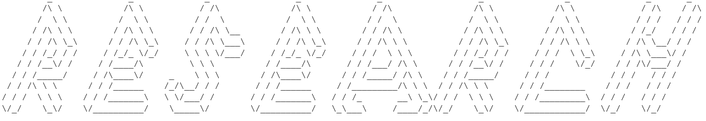

Introduction
I have a long history involving science and research that began at my early age and has continued with my involvement with several research projects.
I finished my bachelor’s degree in physics with a theoretical focus. I have completed my Master of Science and Ph.D in physics, doing research under Prof. Knut Stamnes in the Light and Life Laboratory at Stevens Institute of Technology [Hoboken, NJ]. My dissertation title is "Methods for retrieval of ozone amount, cloud and aerosol optical depth from ground-based irradiance measurements".
Specialization - Projects
I am specialized in radiative transfer and atmospheric physics. In my research I utilize radiative transfer methods, machine learning, simulations, coding, ground based measurements and satellite data.
In my first major research project I used data gathered by a NILU-UV instrument and used a lookup-table method to determine and analyze ozone amount and ozone hole trends above Antarctica. The results were compared to the Ozone Monitoring Instruments' results that is deployed on NASA's Aura satellite.
As my next research, I studied atmospheric aerosols and their radiative and microphysical properties. Using radiative transfer simulations and additional methods I developed an algorithm to measure aerosol optical depth with a multichannel irradiance meter instrument.
Currently I am working on retrieving aerosol optical depth and aerosol size distribution parameters from a amultichannel irradiance instrument, using machine learning techniques. As part of this project I successfully used machine learning to retrieve ozone amount and cloud optical depth from the same instrument in the NYC area. My are soon to be published.
Laboratory
In the Light and Life Laboratory I was responsible for data collection, management and processing, and calibrating/maintaining a NILU-UV instrument.
I tested the (then new) NILU-CUBE instrument in 2015 before it was deployed in Colorado, USA.
I am also familiar with many of NASA satellite products, their file structures and I have an account on NASA's Goddard Earth Sciences Data and Information Services Center that is a satellite database that provides access to a wide range of global climate data,
concentrated primarily in the areas of atmospheric composition, atmospheric dynamics, global precipitation, and solar irradiance.
Recent Publications & Conferences
(Accepted) Milos Sztipanov, Wei Li, Arne Dahlback, Jakob Stamnes, Tove Svendby, Knut Stamnes
”New method for retrieval of aerosol optical depth from multichannel irradiance measurements”
Optics Express (2023)
Milos Sztipanov
“Methods of ozone amount, cloud and aerosol optical depth from ground-based irradiance measurements”
Dissertation (2023)
International Radiation Symposium - Speaker - Thessaloniki, Greece (2022)
Milos Sztipanov, Lubna Tumeh, Wei Li, Tove Svendby, Arve Kylling, Arne Dahlback, Jakob J. Stamnes, Georg Hansen, and Knut Stamnes
"Ground- based measurements of total ozone column amount with a multichannel moderate- bandwidth filter instrument at the Troll research station, Antarctica,"
Appl. Opt. 59, 97-106 (2020)